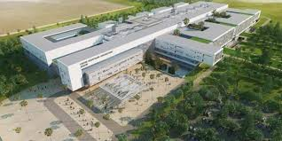
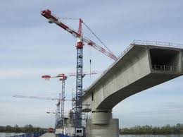
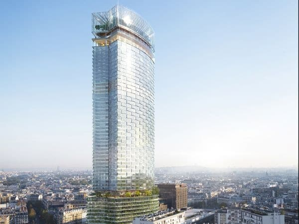
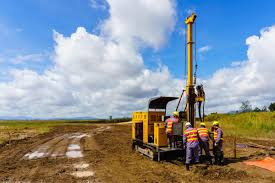

Nos Projets et Références
Découvrez une sélection de projets récents sur lesquels nos équipes sont intervenues, en construction neuve comme en réhabilitation.

Centre Hospitalier (Neuf)
Mission complète de Contrôle Technique Construction (CTC) et coordination SPS pour un ERP de 1ère catégorie.

Diagnostic d'Ouvrage d'Art
Diagnostic structurel et pathologie d'un pont routier. Recommandations de travaux de renforcement.

Tour IGH - La Défense
Études d'exécution et suivi de la stabilité des fondations spéciales et de la structure en phase travaux.

Études Géotechniques G2/G3
Campagne de sondages et essais pour un projet de 150 logements collectifs. Définition des fondations.